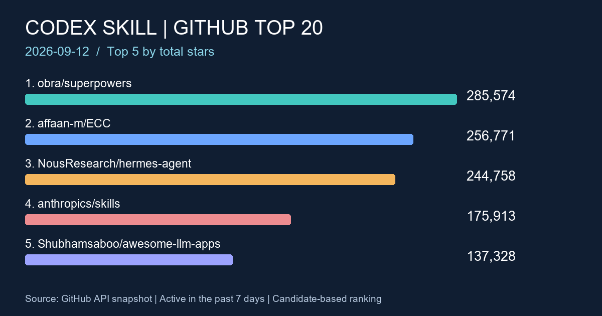

2026-09-12 · GitHub · Codex Skill
GitHub Codex Skill 熱門專案 TOP20
2026-09-12 週報：Anysearch 搜尋與 GitHub 官方資料驗證，整理近七天更新的 20 個技能與 Codex 代理專案。

前言
本週榜單涵蓋技能框架、工程技能集合與 Codex 代理周邊工具。以累積 Stars 排序，可以快速找到值得研究的入口；數字不代表導入品質，也不是本週新增 Stars 排名。
搜尋條件
- 資料整理日期：2026-09-12（Asia/Taipei）。更新窗口：2026-09-05T11:03:57.893185+00:00 至 2026-09-12T11:03:57.893185+00:00，以 UTC 計算完整七天。實際擷取作業完成於 2026-09-12T11:05:47.992047+00:00。
- Anysearch 使用 week 時間條件，搜尋 GitHub 上 Codex Skill、Codex Skills、OpenAI Codex Skill、Agent Skill、Codex agents、Codex plugin、Codex automation 相關候選。code 分類端點回報不可用，採一般搜尋；剔除教學、討論與非 repository 結果。
- 補充上期候選與 GitHub 官方搜尋；後者使用 agent skills、codex skill、codex plugin、codex agents、codex automation 加上 pushed:>=2026-09-05，每組依 Stars 取前 30，再用完整 pushed_at 排除窗口外項目。
- 原始描述明列代理技能／Codex，或 topics 明列 agent-skills／codex，才列入相關候選；一般 AI 平台或僅含籠統 skills 標籤而關聯不清者排除，例如 JavaGuide、Dify。非 Codex 專屬 Agent Skills 亦在範圍內。
- 先讀 GitHub repository API，再以官方 repository search API 補齊受限流影響的欄位。Stars、Forks、language、pushed_at、description 均取官方回應，原始描述保留原文，語言空值顯示未標示；繁體中文不是 repository 語言條件。
- 依 stargazers_count 由高到低，封存與驗證失敗者不列入。表格 Push 日期為 UTC；完整秒數保留於 time 標籤及快照。
初始候選共 128 個，本次取得 123 個可驗證專案資料，符合本次相關性與日期規則者 113 個，列出前 20。仍有 5 個初始候選未取得完整驗證資料。搜尋涵蓋率、每組截取數量與 API 限流會影響入選，因此這是本次候選集合中的 TOP20，並非全 GitHub 完整排名。
TOP20 排名表
手機可左右捲動表格。原始描述中的效果、數量及排名宣稱屬作者自述，未經本站獨立實測。
| 排名 | 專案 | Stars | Forks | 語言 | 最近 Push | 原始描述 | 功能簡介 |
|---|---|---|---|---|---|---|---|
| 1 | obra/superpowers GitHub API | 285,574 | 25,548 | Shell | An agentic skills framework & software development methodology that works. | 將可組合技能與軟體開發方法整合成框架。 | |
| 2 | affaan-m/ECC GitHub API | 256,771 | 38,425 | JavaScript | The agent harness performance optimization system. Skills, instincts, memory, security, and research-first development for Claude Code, Codex, Opencode, Cursor and beyond. | 整合技能、記憶、安全與研究流程的代理工作環境。 | |
| 3 | NousResearch/hermes-agent GitHub API | 244,758 | 50,756 | Python | The agent that grows with you | 可持續成長的 AI 代理；GitHub topics 列有 Codex，屬代理工具類，非 Codex 專屬技能包。 | |
| 4 | anthropics/skills GitHub API | 175,913 | 20,821 | Python | Public repository for Agent Skills | 公開的 Agent Skills 技能儲存庫。 | |
| 5 | Shubhamsaboo/awesome-llm-apps GitHub API | 137,328 | 20,209 | Python | 100+ AI Agents, Agent Skills and RAG Apps - Free and Open Source. | 收錄 AI 代理、Agent Skills 與 RAG 應用範例。 | |
| 6 | farion1231/cc-switch GitHub API | 132,463 | 9,134 | Rust | A cross-platform desktop All-in-One assistant for Claude Code, Codex, OpenCode, OpenClaw, Grok Build & Hermes Agent. Only official website: ccswitch.io | 跨平台程式代理桌面助手；topics 列有技能管理與 Codex。 | |
| 7 | nextlevelbuilder/ui-ux-pro-max-skill GitHub API | 127,028 | 13,560 | Python | An AI skill that provides design intelligence for building professional UI/UX across multiple platforms. | 提供跨平台 UI/UX 設計技能；topics 包含 Codex。 | |
| 8 | openai/codex GitHub API | 123,523 | 19,018 | Rust | Lightweight coding agent that runs in your terminal | 在終端執行的程式代理，為 OpenAI 的 Codex 儲存庫。 | |
| 9 | Graphify-Labs/graphify GitHub API | 117,112 | 11,342 | Python | Turn any codebase, with its docs, SQL schemas, configs, and PDFs, into a queryable knowledge graph. A /graphify skill for Claude Code, Cursor, Codex, and Gemini CLI: local deterministic AST parsing, every edge explained, no vector store. | 將程式碼與文件轉成可查詢知識圖譜的技能。 | |
| 10 | JuliusBrussee/caveman GitHub API | 105,145 | 6,092 | Go | 🪨 why use many token when few token do trick — Claude Code skill that cuts 65% of tokens by talking like caveman | 透過精簡語句降低輸出用量的技能；節省比例為作者宣稱，未獨立實測。 | |
| 11 | nexu-io/open-design GitHub API | 95,695 | 11,092 | TypeScript | 🎨 Best DeepSeek Harness Design Plugin. The open-source Claude Design alternative. 🖥️ Local-first desktop app. 🖼️ Your coding agent becomes the design engine: prototypes, landing pages, dashboards, slides, images & video — real files, HTML/PDF/PPTX/MP4 export. 🤖 Claude Code / Codex / Cursor / DeepSeek Harness / OpenCode & 20+ CLIs via BYOK. | 讓程式代理產出設計與多媒體檔案的本機應用，描述列有 Codex。 | |
| 12 | thedotmack/claude-mem GitHub API | 93,712 | 8,249 | TypeScript | Persistent Context Across Sessions for Every Agent – Captures everything your agent does during sessions, compresses it with AI, and injects relevant context back into future sessions. Works with Claude Code, OpenClaw, Codex, Gemini, Hermes, Copilot, OpenCode + More | 將代理工作摘要保留到後續工作階段的記憶工具，描述列有 Codex。 | |
| 13 | addyosmani/agent-skills GitHub API | 93,637 | 9,960 | JavaScript | Production-grade engineering skills for AI coding agents. | 面向正式工程開發的代理技能集合。 | |
| 14 | bytedance/deer-flow GitHub API | 82,309 | 11,348 | Python | An open-source long-horizon SuperAgent harness that researches, codes, and creates. With the help of sandboxes, memories, tools, skill, subagents and message gateway, it handles different levels of tasks that could take minutes to hours. | 結合沙箱、記憶、工具與技能的長任務代理框架。 | |
| 15 | ruvnet/ruflo GitHub API | 72,197 | 8,543 | TypeScript | 🌊 The original agent harness. Deploy intelligent multi-player swarms, coordinate autonomous workflows, and build conversational AI systems. Features adaptive memory, self-learning intelligence, federation, vector RAG integration, and native Claude Code / Codex / Hermes and many more Integrated | 結合多代理工作流程與記憶的框架，原始描述列有 Codex 整合。 | |
| 16 | career-ops-hq/career-ops GitHub API | 71,321 | 13,460 | JavaScript | Open-source AI job search: scan job portals, evaluate listings into a structured A-H report with a global 1-5 score, tailor your CV, track applications — runs locally in your AI coding CLI (Claude Code, Codex, OpenCode, Antigravity…) | 在 Codex 等程式 CLI 執行求職搜尋、履歷調整與申請追蹤流程。 | |
| 17 | colbymchenry/codegraph GitHub API | 70,553 | 4,514 | C | Pre-indexed code knowledge graph, auto syncs on code changes, for Claude Code, Codex, Gemini, Cursor, OpenCode, AntiGravity, Kiro, CoPilot, and Hermes Agent — fewer tokens, fewer tool calls, 100% local | 替 Codex 等代理提供程式知識圖譜與變更同步。 | |
| 18 | stablyai/orca GitHub API | 67,040 | 4,398 | TypeScript | Orca is the ADE for working with a fleet of parallel agents. Run any coding agent with your own subscription. Available on desktop, mobile and remote runtime. | 管理多個平行程式代理的開發環境；topics 列有 Codex。 | |
| 19 | mvanhorn/last30days-skill GitHub API | 61,875 | 5,398 | Python | AI agent skill that researches any topic across Reddit, X, YouTube, HN, Polymarket, and the web - then synthesizes a grounded summary | 從多個公開平台研究主題並整理摘要的技能。 | |
| 20 | tt-a1i/archify GitHub API | 59,046 | 3,868 | JavaScript | Agent skill for beautiful, verifiable architecture, workflow, sequence, data-flow, and lifecycle diagrams—self-contained HTML with motion and crisp export. | 產生架構、流程與序列圖等 HTML 圖表的技能。 |
觀察重點
- superpowers 與 ECC 位居前二，工程方法與技能框架仍累積大量關注。這是本次候選分布的觀察，不能推論整體市場佔有率。
- 代理管理工具也進入前段：CC Switch、Orca 與 Ruflo 的用途各異，應分別評估設定管理、平行任務與流程協作需求。
- Graphify 與 Codegraph 都涉及程式知識圖譜；archify 則偏向架構與流程圖產出。導入前先界定是要查詢程式、理解系統，還是製作文件。
MIS／技術人員注意項目
- 工程技能可先以測試專案評估，記錄輸入、產出、人工修正時間；固定技能版本，檢視 SKILL.md、附帶腳本、授權與更新方式。
- OA／PROD 分別確認外部 API、離線依賴、服務帳號與執行權限；跨平台標示不能代替 Windows、PowerShell 與企業代理伺服器實測。
- 記憶與程式索引工具先確認保存位置、保留期限、刪除方式及是否傳送資料；以去識別化測試內容驗證。
- 以 archify 測試流程文件、以 Graphify／Codegraph 測試程式查詢時，應核對來源與輸出關係；高 Stars 不保證結果正確。
本週變化簡述
比較已發佈的 2026-09-05 週報及其資料快照：
- obra/superpowers：281,933 → 285,574 Stars（+3,641）。
- affaan-m/ECC：248,969 → 256,771 Stars（+7,802）。
- tt-a1i/archify：48,716 → 59,046 Stars（+10,330）。
mattpocock/skills 本次為 260,125 Stars，但 pushed_at 仍是 2026-09-04T08:45:43Z，已超出七天窗口，故不列榜；marketingskills 的 2026-09-05T04:48:10Z 同樣早於窗口起點。未入榜不等於 Stars 減少或停止維護。
本次相對上期新增入榜：NousResearch/hermes-agent、farion1231/cc-switch、openai/codex、ruvnet/ruflo、career-ops-hq/career-ops、colbymchenry/codegraph、stablyai/orca。新增入榜可能來自本週擴充的候選集合與日期篩選，不能一律稱為本週新成立或爆紅。上述 Stars 差值是兩次快照之差，非精確每小時的統計。
結語
從一個可量測的工作流程開始，例如程式查詢或流程文件，再評估權限、依賴與維護成本。將榜單當成研究入口，搭配測試結果決定是否導入。
資料來源與時間提醒
來源：Anysearch 搜尋與各列 GitHub 原始 Repository／官方 API。官方搜尋查詢欄位使用 GitHub Search API。可下載 本次欄位快照與未驗證候選清單；即時 API 內容可能已改變。
Stars、Forks 與最近 Push 時間會隨 GitHub 即時變動，此頁保留本次整理結果。